/ TEACHING — THE STUDENT CITY
Mapping the city,
to serve student life.
A Design VII studio — a student-led project organised by Desert City Mappers at MSA University — that reads 6th of October City through the eyes of the students who live in it. Rather than take the desert city as the planners drew it, the studio maps the services actually on the ground, then produces trends and strategies to improve the urban environment for a vibrant student life.
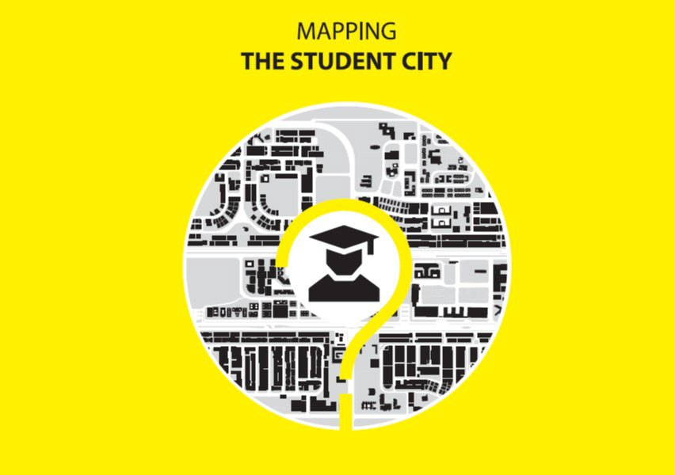
/ THE STUDIO
The desert city, read from the ground up.
Desert cities have long been portrayed as the Egyptian dream — an escape from the congested Nile corridor to a vast land of opportunity and uncharted potential. Yet the internal migration patterns of Egyptians tell a different story: most of these new towns never reach the population their planners targeted, and the residents who do arrive form typologies the planner never expected.
The Student City takes 6th of October City — one of the most populated desert cities in the Greater Cairo Region — as an up-and-rising urban centre and asks the students to document it as it really works. They map the existing services, read the gap between the planned city and the lived one, and produce innovative trends and strategies to improve the urban environment for the student life that animates it.
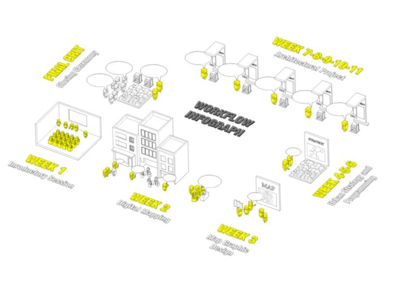
Survey & services
The studio began on the street. Students surveyed 6th of October City block by block, tagging the services that shape daily student life — housing, food, printing, laundry, everyday commerce — and geolocating each one. The findings were gathered into a live, searchable service map, turning scattered field notes into a shared reading of what the city actually offers and where it falls short.
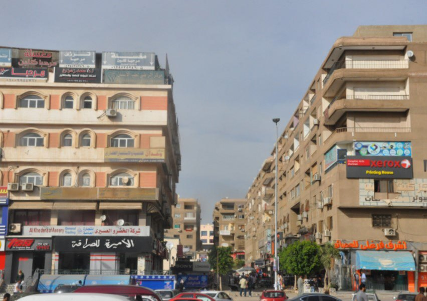
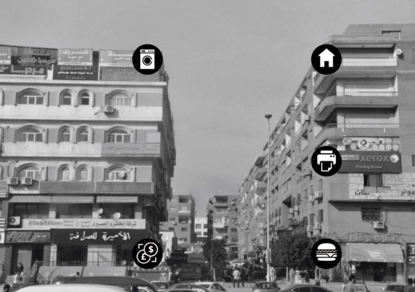
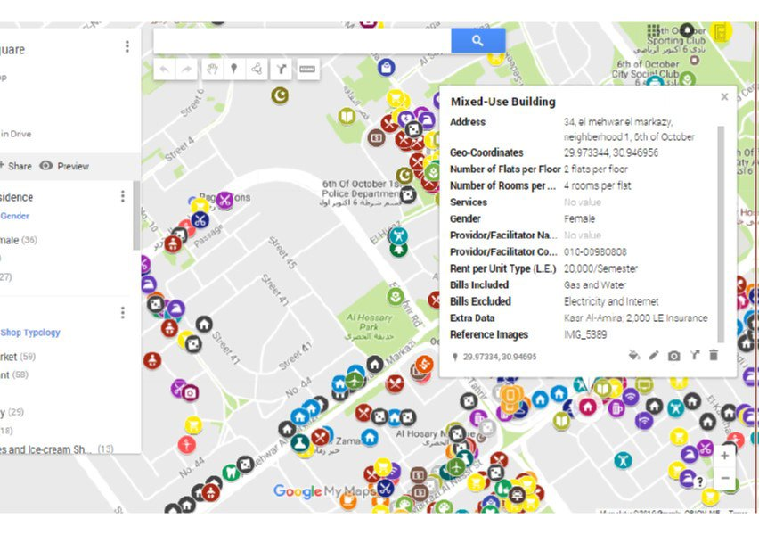
MSA University · Fall 2016
Alongside the digital mapping, the studio built a large physical model of the city — a shared object to test ideas against and to present to faculty and guests. Working as Desert City Mappers, the students carried the project from survey to strategy together, reviewing the developing schemes in the studio hall and around the model itself.
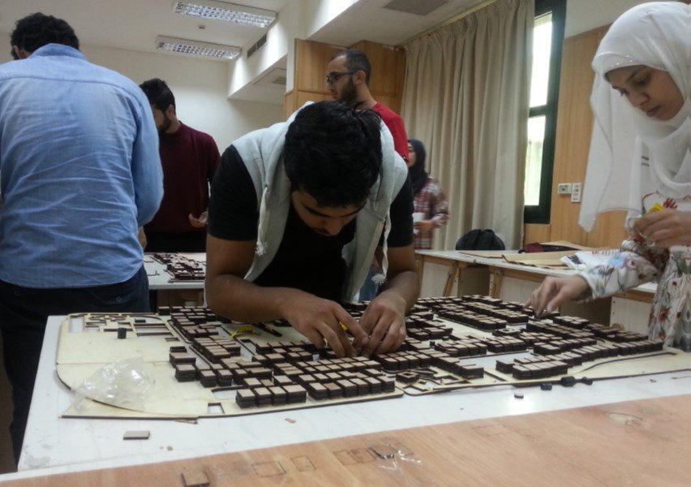
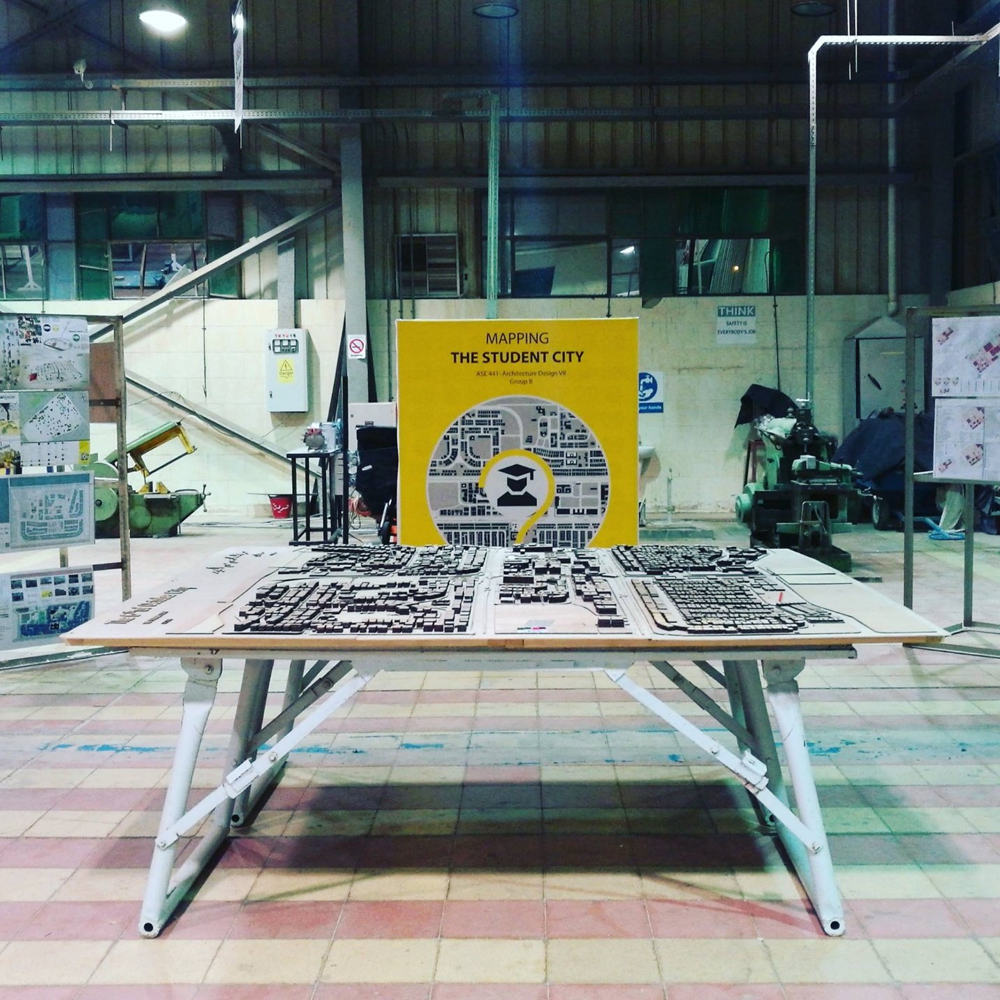
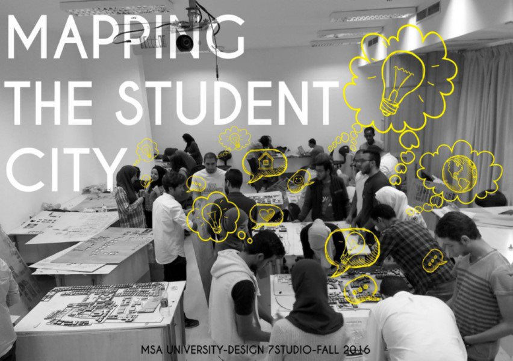
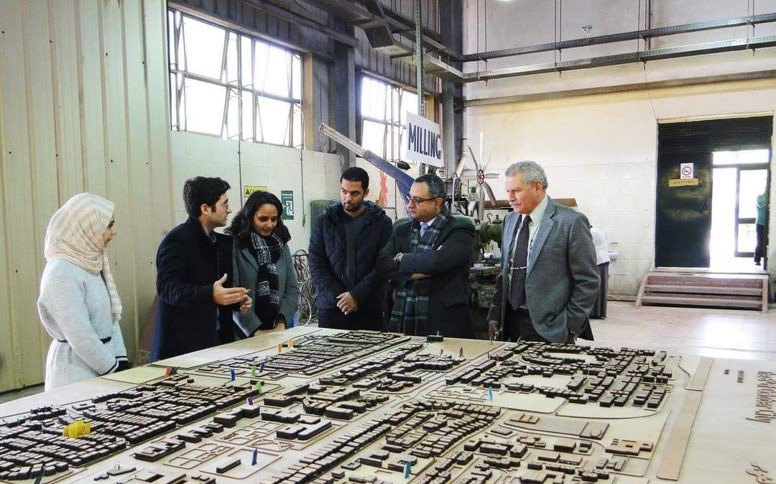
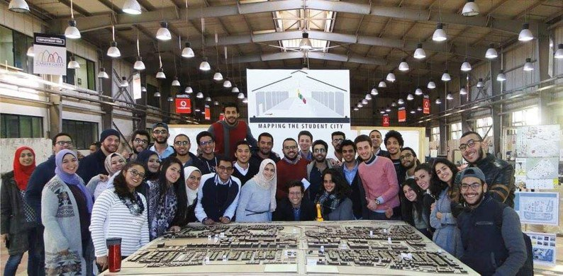
Strategy to architecture
From the shared reading of the city, each student carried an urban strategy through to an architectural project — interventions pitched to serve student life, from a transport node to a hostel. The proposals were argued at the crit against the maps and analysis that produced them.
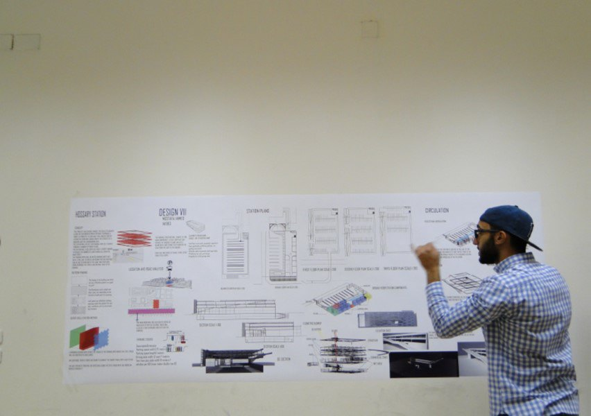
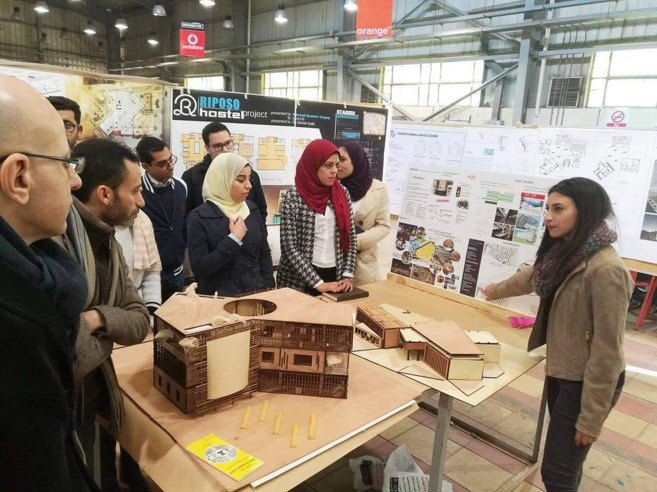
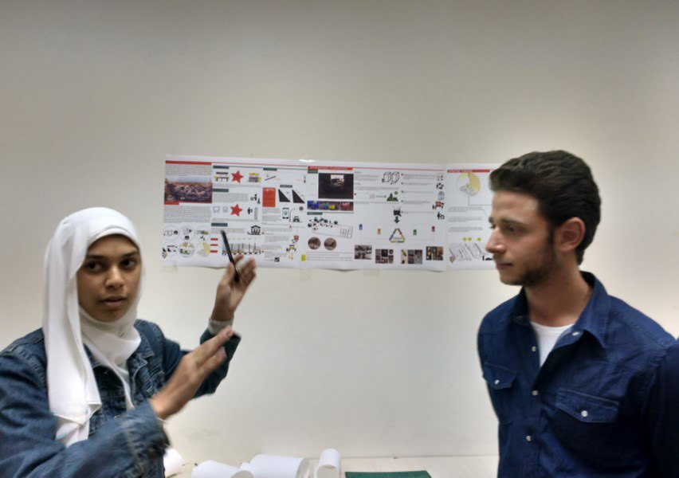
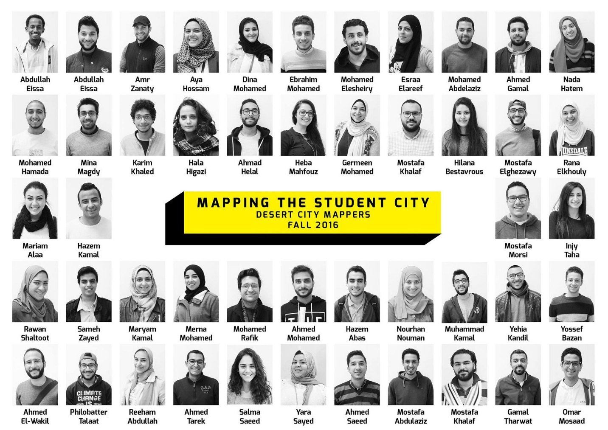